Context
What Whatfix does.
Whatfix is a digital adoption platform. Authors build in-product guidance inside their customers' enterprise applications (Salesforce, SAP, internal tools) and deploy it without engineering changes. Content creators work in a browser extension called Studio; end users see flows, tips, beacons, and pop-ups overlaid on the live product.
There was no tool for authors.
When authors' content stopped working, the only path was escalation. There wasn't a design problem yet. There was a missing product.
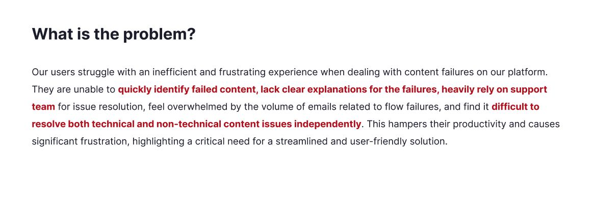
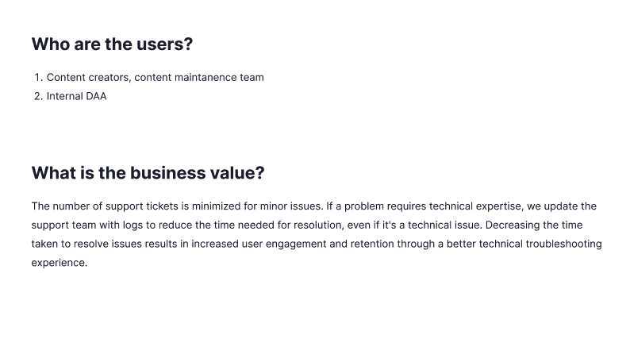
When I picked up the brief in early 2024, Whatfix had no author-facing diagnostic tool. If a Smart Tip stopped firing or a Flow broke mid-step, the author had one option: file a Support ticket, wait for a screen-share, and watch a Whatfix engineer run a debug command in the developer tools of their own browser. Escalate, wait, watch.
Preview modes existed in Whatfix. All showed the pixels. None told an author what was wrong.
In-Studio preview on the target URL, with editing enabled. The one authors reached for most.
Opens the customer's product with content overlaid in a Separate view, disconnected from Studio.
Modal from the content list. Fast, but No target-URL context, so URL-scoped diagnostics would be meaningless.
For editing live production content. Wrong intent. This isn't the pre-publish check flow.
Why Preview Mode won. Not popularity: structural capability. Diagnosis, fix, and re-verify had to happen in one gesture, without leaving the surface. Preview Mode was the only mode that ran In Studio, on the target URL, with editing enabled. The criterion decided the surface: Never leave the surface to complete the loop.

Before we framed a solution, we mapped the full service. The blueprint made the gaps legible: authors hit dead ends during creation, onboarding handoffs lost context, and maintenance had no self-serve path back to a fix. Support absorbed every break the product didn't surface.
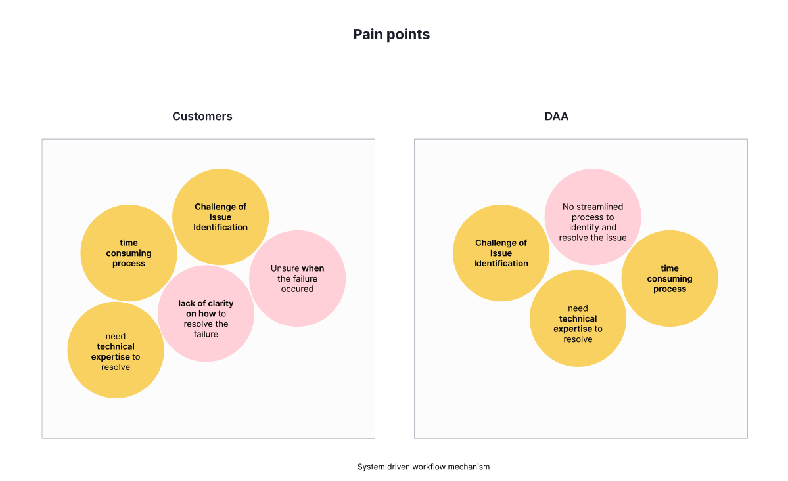
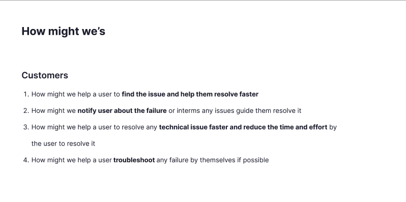
Two personas anchored the "who." Both non-technical; both dependent on Support.
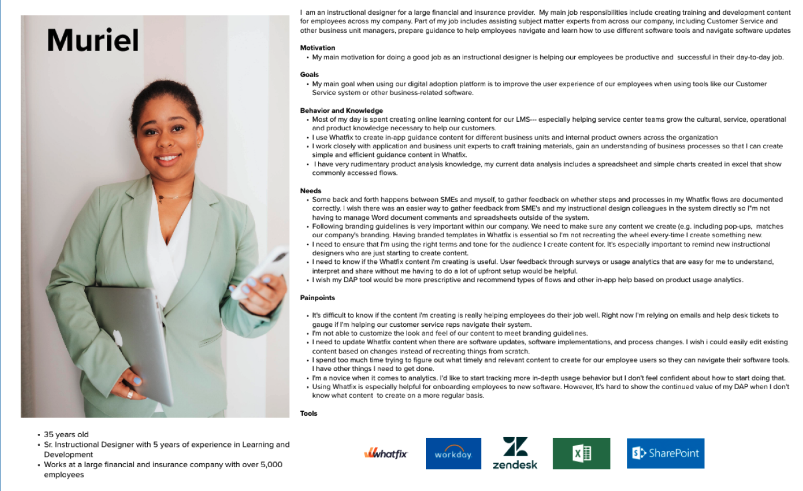
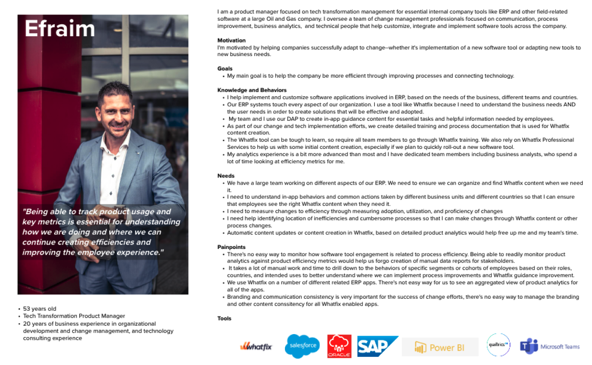
Who owns which issue?
Support knew the answer better than anyone. Their classification was the load-bearing part of discovery.
- Display rule mismatch (segment, URL, device)
- Wrong or missing element selector
- Content in wrong workflow stage
- Occurrence rules not set correctly
- Content published to the wrong page
- Browser extension version mismatches
- Customer-side DOM structure changes
- Iframe and cross-origin failures
- SPA route changes breaking anchors
- CSP restrictions blocking Whatfix runtime
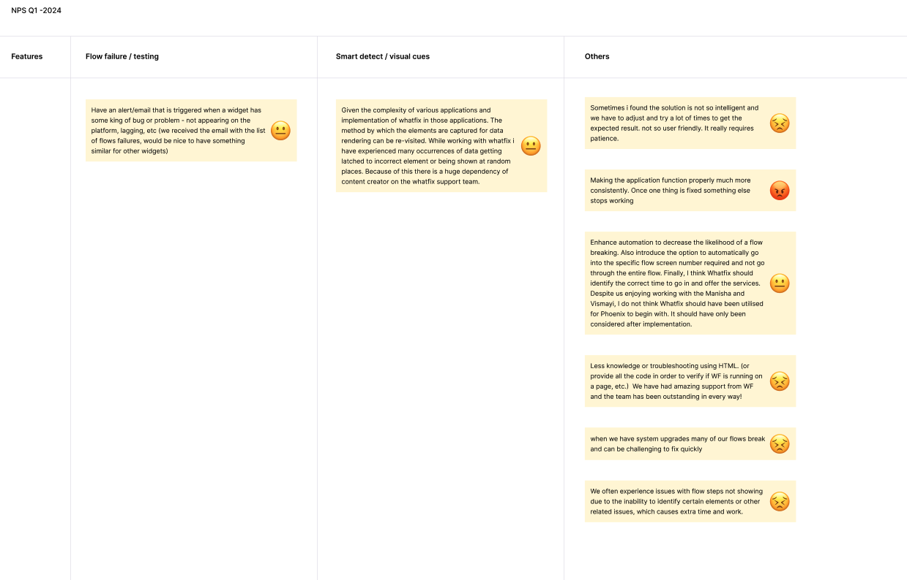
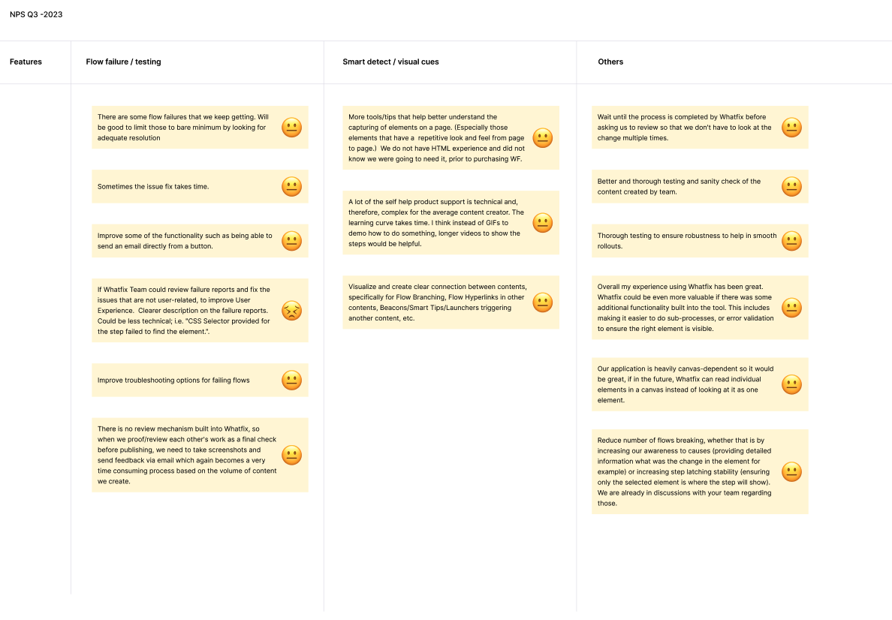
Support wasn't a downstream stakeholder to inform; they were the discovery partner. They'd resolved every one of the 182 monthly tickets themselves and knew, ticket by ticket, whether the author could have fixed it if they'd been shown how, or whether it genuinely needed engineering. The design's whole audience question, Who is Diagnostics for?, was answered in their room, not mine.
The design principle: handle both buckets in the same panel. Show authors what they can fix, with the fix path visible. Show them what they can't, with a smooth escalation attached. Neither should feel like a dead end. Bucket 1 was the design job. Bucket 2 was the honesty job.
One panel. Three detection strategies.
Diagnostics can't work the same way for every content type. The five types don't behave the same way. That was the constraint that shaped the whole panel.
Flows
A Flow is a sequence of steps. A broken step only reveals itself when the flow is triggered by an author or user action.
Smart Tips + Beacons + Launchers
Render on page load based on display rules. Detection can happen the moment the tab opens.
Pop-ups
A Pop-up with occurrence: once won't re-fire on re-visit. Flagging that as a "failure" would misdiagnose correct behaviour.
Content on this URL
Whether content is scoped to the current URL is deterministic. Non-applicable content moves to Not on this page.
Two ideas we cut.
Design taste doesn't cut ideas. Engineering constraints do, when you name them out loud.
A global list of all content with issues attached.
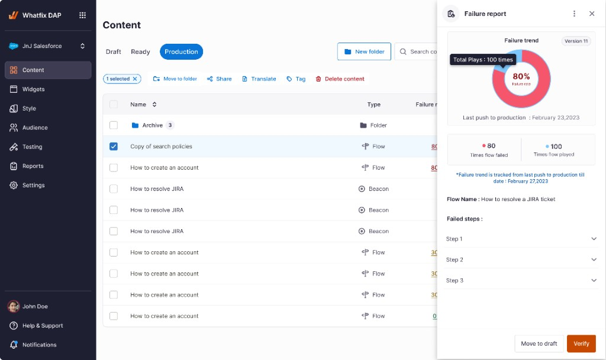
Content is contextual to a URL. An author needs to know Where the issue lives, not just that it exists. A global list without URL context turns diagnosis into a scavenger hunt.
Manage content reconfigured as preview mode.
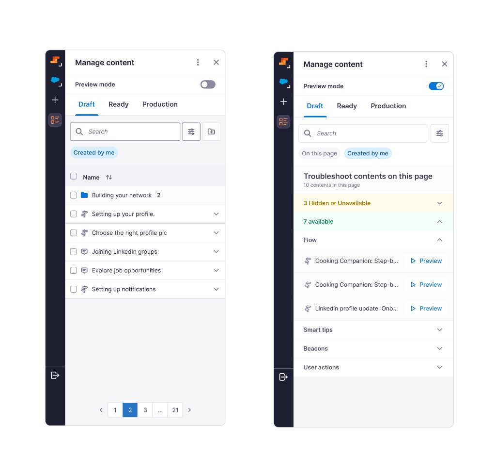
Collapses two jobs into one toggle. Authors still need a stable list for bulk moves and folder hygiene; Diagnosis belongs in Preview Mode, not by repurposing Manage.
A tab inside Preview Mode.
Preview Mode was the surface. The next question was the container shape: modal, overlay, route, or tab. Tab won on four criteria.
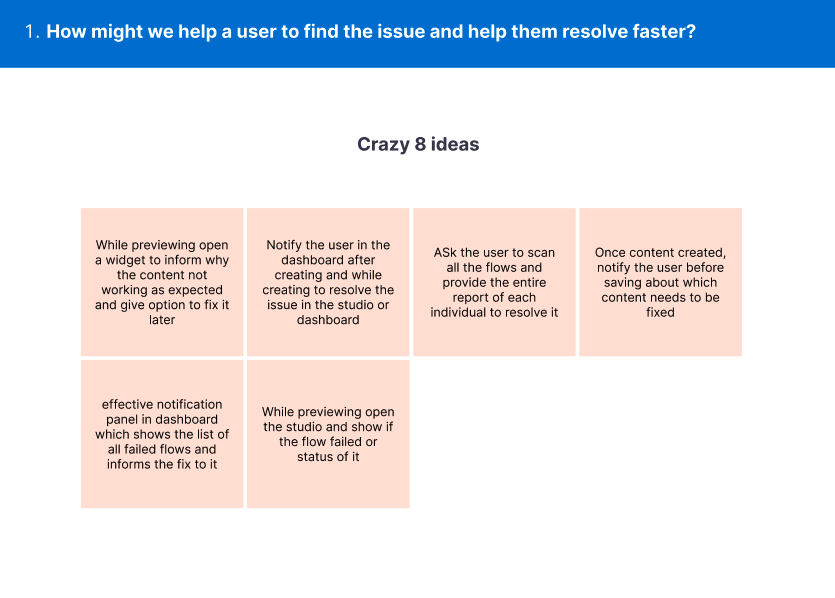
Diagnostics is a tab, not a separate surface. Enabling Preview Mode auto-navigates the author there. If you're previewing, you might be checking for issues.
Categorized by content type, same as creation. Flows, Smart Tips, Beacons, Launchers, Pop-ups, using the same taxonomy authors already knew from building. No new mental model.
Applicable content shows on the page; the rest goes to Not on this page. Makes URL scoping explicit and answers Efraim's coverage question at the same time.
Search by content type and issue type. A power-user path for authors managing many pieces at once.
Notification banner for the minimized case. If Studio is minimized while previewing and a flow step fails, a banner surfaces at the top of the customer's browser. One click restores Studio to the Diagnostics tab.
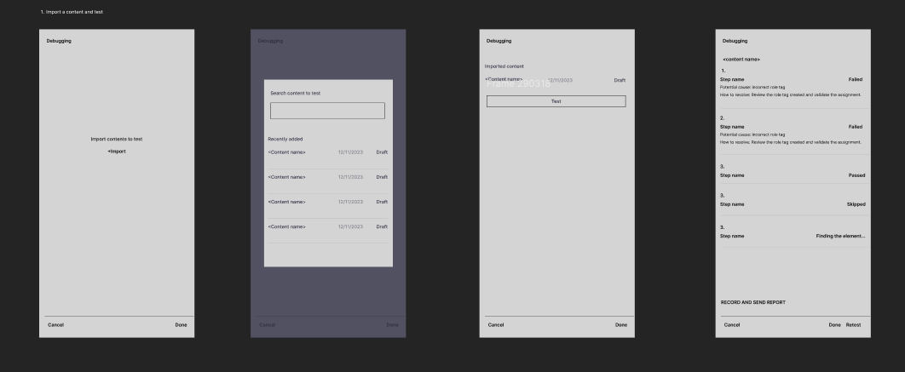
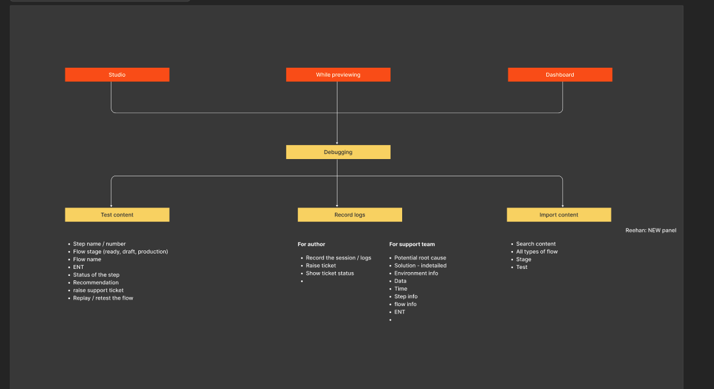
Two happy paths, one panel.
Different content, different entry. Same fix affordance underneath.
Fixing a Flow step
Play-based- Create a flow.
- Enable Preview Mode.
- Play the flow.
- Step 3 fails.
- Open Diagnostics.
- Read the issue in creator language.
- Fix the step (if author-fixable).
- Save the flow.
- Re-preview to verify green.
Fixing a Smart Tip
Upfront- Create Smart Tips.
- Open Diagnostics.
- Open the Smart Tips accordion.
- Failed ones surfaced upfront.
- Open one.
- Read the issue in creator language.
- Fix.
- Save.
- Re-preview to verify green.
Four shipped screens, in the order an author experiences them: onboarded into preview-mode diagnostics, scan the page inventory, then drill into a failure and a success on the same Pop-up category.
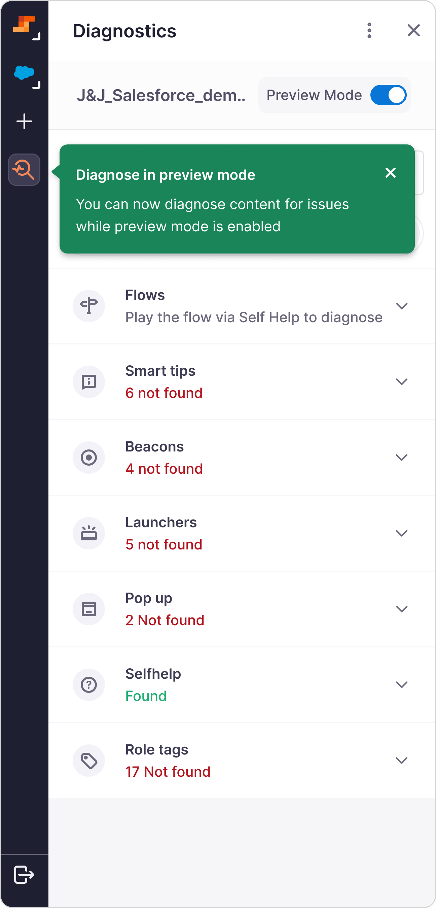
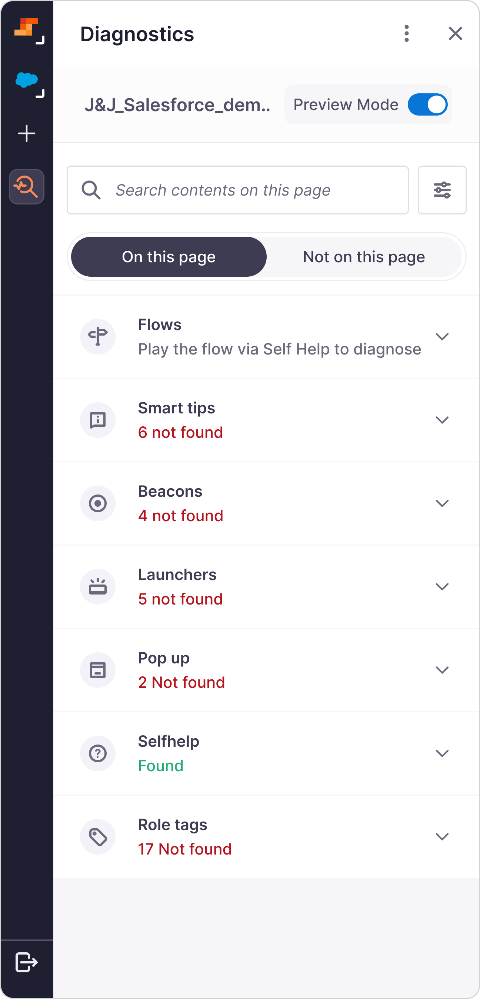
Dismiss the tooltip and the panel settles into the standard home. Content types match creation taxonomy (Flows, Smart Tips, Beacons, Launchers, Pop-ups) with pass/fail counts visible before an author opens a single accordion. No new mental model; just status at a glance.
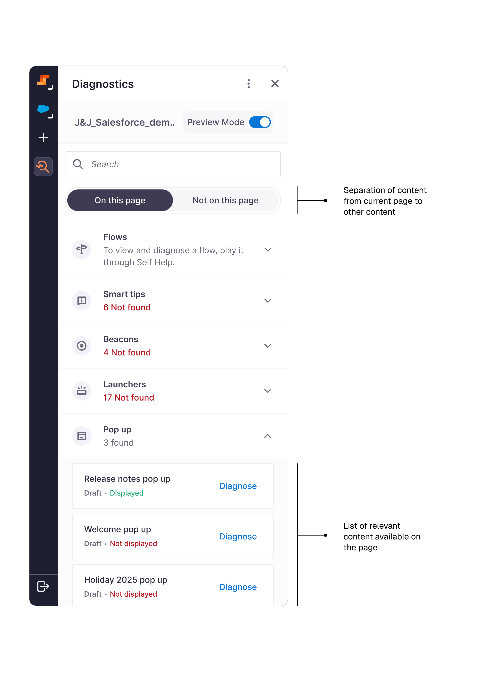
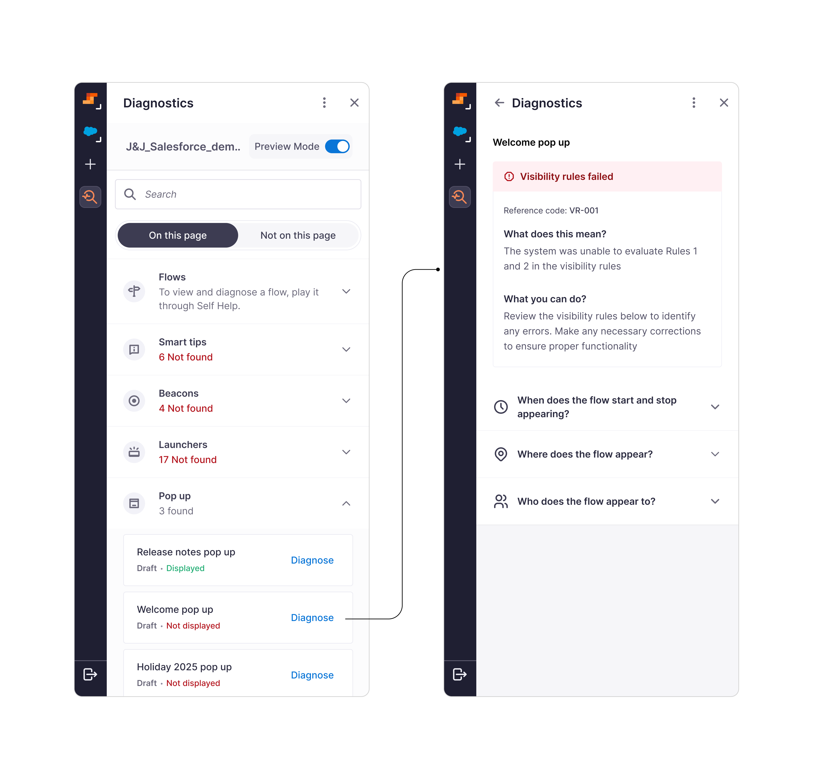
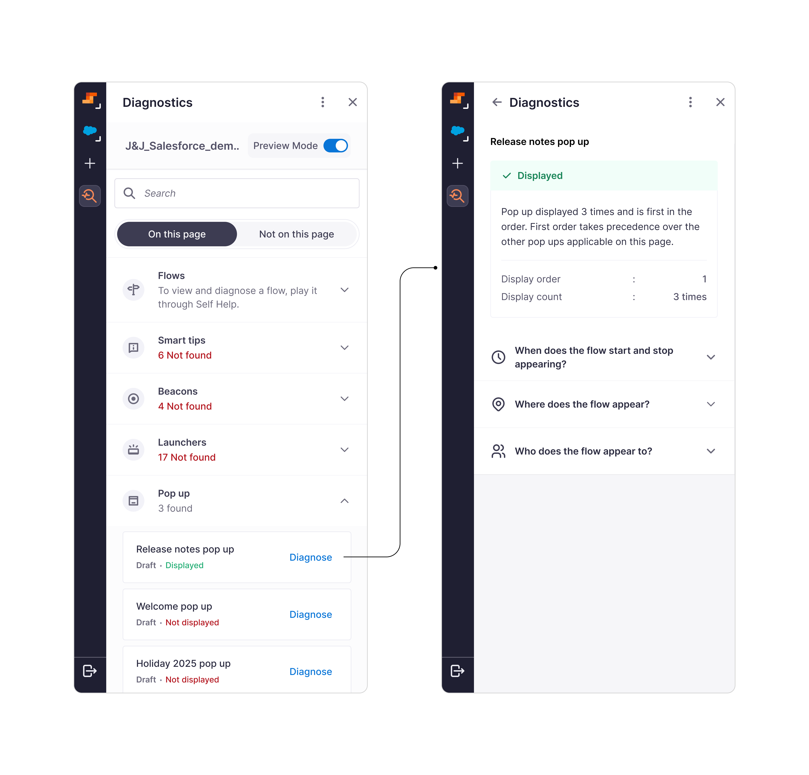
What made this hard.
Three constraints visible from week one. Each shaped a design decision downstream.
Enterprise-customer recruiting was slow. 5–7 users per method was the ceiling, not the target. Most testing went to Muriel-side. Efraim's coverage view, a Phase 2 candidate, stayed thin on validation.
Engineering was split across two projects. Not all engineers attended every design review. The content-type strategy constraint surfaced from engineers who joined late; if it had surfaced in week two instead of week six, we would have saved a full design cycle.
The design-system pod was mid-overhaul. They couldn't absorb a five-state status pill contribution on our timeline. The workaround was tactical; the DS pod shipped the proper primitive two months after launch.
What the first two quarters said.

Six weeks after launch, the internal content team posted this in Slack. No prompt. No survey. Just a cheers thread that named the workflow change out loud.
The Support team's own read was clearer than any dashboard. Their per-ticket RCA time dropped. The diagnosis often arrived pre-attached to the escalation, so they were starting mid-investigation rather than at the top. Bucket 1 issues mostly stopped arriving. "Support went back to doing engineering work instead of translation work", the appreciation voiced in the retro.
Two quarters isn't enough to call the drop durable. I'd want four before treating it as a baseline. The Support team outcome is the one I trust most.
What I'd unship, and what I'd design instead today.
The 2025 product is a tab authors open. In 2026, that shape is no longer the right one.
Auto-navigation to Diagnostics on Preview Mode enable was right most of the time, wrong when the author is previewing routine changes. Should defer to a discoverable badge on first visit, auto-nav on second.
The pill workaround was the right tactical move, wrong long-term primitive. Co-design with DS earlier next time.
The Pop-up occurrence-once handling is currently silent. Better: surface an Occurrence-satisfied state so authors understand why the pop-up isn't firing without misdiagnosing it.
Background watcher. The panel opens because the system invited it, not because the author suspected.
Why isn't my onboarding showing for new sales reps? The tab becomes one surface for the agent, not the product.
Reason across the journey. This Flow fails because the Smart Tip before it stopped firing last week.
Support reads the agent's analysis instead of running their own. Technical issues escalate With the RCA already done.
Diagnostics taught me one thing that travelled to every project after: Let the engineering constraint be the design brief. The three detection strategies weren't the enemy of the design. They were the shape of it.
Studio: reimagining Whatfix content creation
Create flows, pop-ups, tooltips, beacons and launchers from one guided surface.